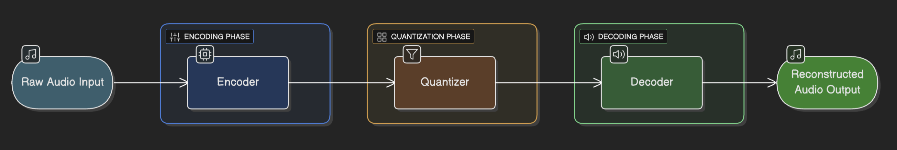
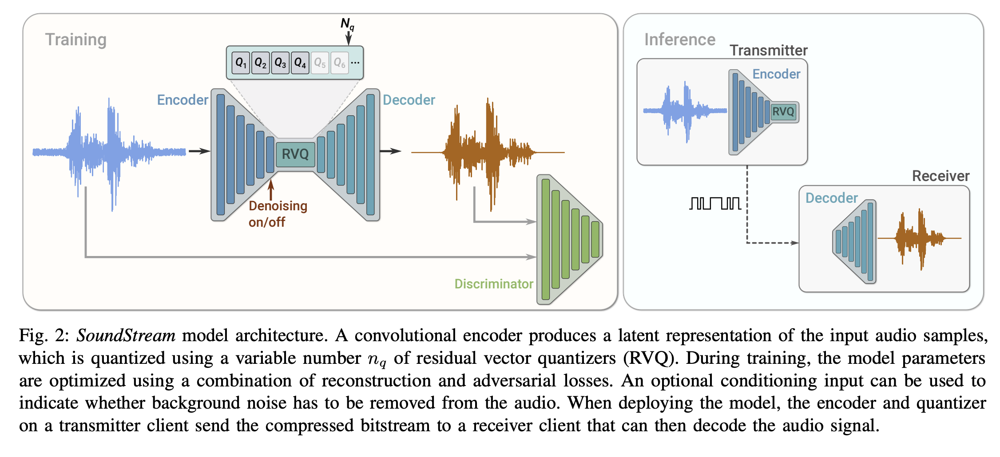
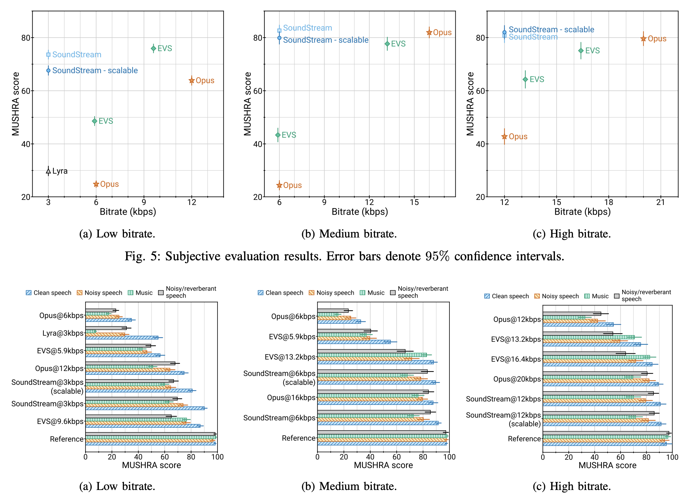
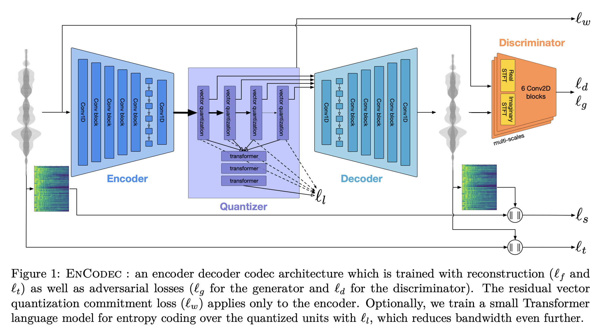
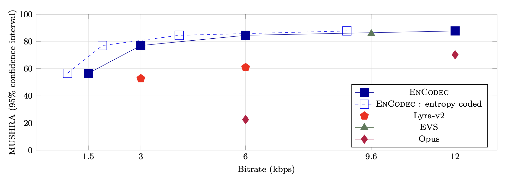
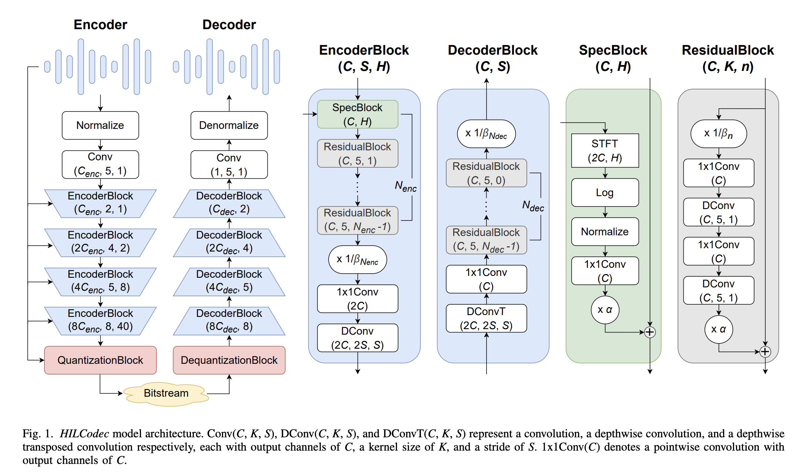
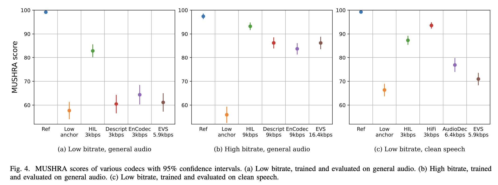

Neural audio codecs are a new generation of audio compression tools powered by deep learning. Unlike traditional codecs, which rely on hand-crafted signal processing, neural codecs learn to compress and reconstruct audio directly from data, achieving much higher quality at lower bitrates. In this guide, we’ll explore three leading neural audio codecs—SoundStream, EnCodec, and HILCodec—highlighting what makes each unique. You’ll also find practical code examples showing how to use neural audio codecs to compress and reconstruct audio, so you can experience their capabilities firsthand.
Traditional Audio Codecs
Traditional audio codecs rely on signal processing techniques rooted in psychoacoustic models, which discard imperceptible audio components to reduce file sizes. Traditional audio codecs fall into two main camps,
Waveform Codecs
Goal: Reproduce the original audio as closely as possible, sample by sample.
How They Work:
They take the audio signal (which is a waveform in the time domain) and convert it into another form, usually the time-frequency domain, using a mathematical process called a transform.
After transformation, they compress the data by quantizing (rounding off) the numbers and encoding them efficiently.
When you want to listen to the audio, the codec reverses the process to get back to the time-domain waveform.
Features:
They don't make many assumptions about what kind of audio they're compressing, so they work for all types of sounds—music, speech, noise, etc.
They sound great at medium to high bitrates (more data per second), but at low bitrates (less data), you might hear strange artifacts or loss of quality.
Examples: MP3, Opus, AAC.
Parametric Codecs
Goal: Reproduce audio that sounds like the original, even if it's not identical sample by sample.
How They Work:
They assume the audio is of a specific type (usually speech).
Instead of saving the whole waveform, they analyze the audio and extract important features or parameters (like pitch, tone, speed).
Only these parameters are compressed and sent.
The decoder then uses a model to synthesize (recreate) the audio using the parameters.
Features:
They are very efficient at low bitrates and can produce understandable speech with very little data.
They don't try to perfectly recreate every detail, just make the audio sound similar to the original to our ears.
They usually work best for speech and may not be suitable for music or complex sounds.
Examples: Some VoIP codecs, like EVS or MELP.
Both approaches rely on hand-crafted signal processing pipelines, which limit their flexibility and performance—especially as we demand better quality at lower bitrates, and for more diverse content (music, ambient sounds, etc.).
Did you know?
The Opus codec, standardized in 2012, is the audio engine behind popular apps like Zoom, Microsoft Teams, Google Meet, and even YouTube streaming! Its widespread adoption means that hundreds of millions of people use Opus every day—often without even realizing it. Meanwhile, the Enhanced Voice Services (EVS) codec, designed for Voice over LTE (VoLTE), is taking over as the new standard for mobile calls, offering improved quality and full compatibility with older systems.
Neural Audio Codecs
Neural audio codecs use deep learning to learn efficient, perceptually meaningful representations of audio directly from data. This opens the door to higher quality, lower bitrates, and new features like joint enhancement and compression. These systems typically consist of three components:
An encoder that converts raw audio into a compressed latent representation.
A quantizer that maps continuous latent vectors to discrete symbols for efficient storage/transmission.
A decoder that reconstructs audio from the quantized representation.

Neural Audio Codecs Architecture
The key advantage lies in their end-to-end training process, where all components are optimized jointly to minimize perceptual differences between original and reconstructed audio. This data-driven approach allows neural codecs to adapt to complex audio patterns that challenge rule-based systems, particularly at ultra-low bitrates (<6 kbps).
SoundStream: End-to-End Neural Audio Coding
SoundStream is a fully end-to-end neural audio codec that can compress speech, music, and general audio at bitrates as low as 3 kbps—outperforming traditional codecs at much higher bitrates.
Key Innovations
End-to-End Training: The entire pipeline—encoder, quantizer, and decoder—is trained jointly, optimizing for both reconstruction accuracy and perceptual quality via adversarial losses.
Residual Vector Quantization (RVQ): Instead of a single quantization step, SoundStream uses a multi-stage (residual) vector quantizer. This allows it to represent audio more efficiently and enables bitrate scalability.
Bitrate Scalability: Thanks to a novel "quantizer dropout" during training, a single SoundStream model can operate at different bitrates (3–18 kbps) with minimal quality loss.
Low Latency & Real-Time: The model is fully convolutional and causal, making it suitable for low-latency, real-time applications—even on a smartphone CPU.
Joint Compression and Enhancement: SoundStream can simultaneously compress and enhance audio (e.g., denoise speech) with no extra latency.

SoundStream Architecture. Source: [1]
Architectural Design
The system uses a fully convolutional U-Net structure with strided convolutions for downsampling and transposed convolutions for upsampling. A residual vector quantizer (RVQ) between encoder and decoder discretizes the latent space while maintaining reconstruction fidelity. Crucially, SoundStream introduced structured dropout during training, enabling a single model to operate across multiple bitrates (3-18 kbps) without quality degradation.
At 3 kbps, SoundStream outperforms Opus at 12 kbps and approaches the quality of EVS at 9.6 kbps.
It works for speech, music, and general audio—not just speech.
Subjective tests (MUSHRA) show that listeners prefer SoundStream's output at low bitrates over traditional codecs.

SoundStream Performance Results. Source: [1]
EnCodec: High-Fidelity Neural Compression
Meta's EnCodec (2022) builds on SoundStream's foundation while addressing scalability and stability challenges.

EnCodec Architecture. Source: [2]
Key Innovations
Spectrogram Adversary: EnCodec replaces SoundStream's waveform discriminator with a multi-scale spectrogram discriminator, which analyzes audio at different time-frequency resolutions. This modification:
Reduces artifacts caused by phase inconsistencies in waveform-based GANs
Improves training stability through better gradient signals
Enables effective handling of stereo audio at 48 kHz sampling rates
Loss Balancing Mechanism: The authors introduced a gradient-balancing technique that dynamically adjusts loss weights based on their contribution to the total gradient magnitude. This innovation decouples hyperparameter tuning from loss function scales, significantly simplifying training.
Latent Space Compression: EnCodec demonstrates how lightweight Transformer models can further compress the quantized latent representation by 40%, enabling variable-rate compression without retraining. Subjective evaluations show EnCodec outperforming EVS at 16.4 kbps while operating at 9 kbps, with particularly strong performance on music and noisy speech.
Results
EnCodec was rigorously evaluated across a range of bitrates and content types (speech, music, noisy and reverberant speech). Key findings include:
Superior Quality: At all tested bitrates (1.5, 3, 6, 12 kbps for 24 kHz; 6, 12, 24 kbps for 48 kHz), EnCodec outperformed traditional codecs and previous neural models in both objective and subjective (MUSHRA) tests.
Versatility: Works seamlessly for both speech and music, and robustly handles challenging conditions like noise and reverberation.
Efficiency: Achieves real-time encoding and decoding on a single CPU core, making it practical for large-scale deployment.

EnCodec Performance Results. Source: [2]
HILCodec: Lightweight and Efficient Streaming
The 2024 HILCodec paper addresses critical limitations in prior neural codecs—model complexity and streaming efficiency [3].

HILCodec Architecture. Source: [3]
Key Innovations
Variance-Constrained Wave-U-Net Through theoretical analysis, the authors identified that standard Wave-U-Net architectures suffer from exponential variance growth in deeper layers, leading to unstable training and performance degradation. HILCodec introduces:
L2-normalization after each residual block to control activation scales
Depthwise separable convolutions to maintain receptive field while reducing parameters
Causal convolutions with 20ms latency for real-time streaming
Distortion-Free Discriminator Traditional waveform discriminators introduce spectral distortions by prioritizing time-domain accuracy. HILCodec's discriminator uses parallel filter banks analyzing different frequency bands, ensuring artifact-free reconstructions across the audible spectrum.
HILCodec matches or outperforms both traditional and leading neural codecs (like SoundStream, EnCodec, and HiFi-Codec) in subjective and objective tests, across various audio types (speech, music, environmental sounds) and bitrates (1.5–9 kbps). It achieves this with:
Lower computational complexity: Real-time on a single CPU thread
Superior or comparable perceptual quality: Especially at very low bitrates
Streamable design: Suitable for live audio and embedded applications

HILCodec Performance Results. Source: [3]
SNAC: Multi-Scale Neural Audio Codec
SNAC (Multi-Scale Neural Audio Codec), introduced in 2024, extends the Residual Vector Quantization (RVQ) framework by introducing quantization at different temporal resolutions, enabling more efficient compression through multi-scale discrete audio representations [4].
RVQ Multi-Scale Quantization. Source: [4]
Key Innovations
Multi-Scale Residual Vector Quantization: Unlike traditional RVQ approaches that operate at a fixed temporal resolution, SNAC employs a hierarchy of quantizers operating at multiple temporal resolutions. At each quantization iteration, the residuals are downsampled by a factor \(W_i\), quantized, and then upsampled back to match the original temporal resolution. This multi-scale approach allows the codec to capture both coarse and fine audio details more efficiently:
Coarse temporal structure (like prosody and semantic patterns) is captured at lower frame rates
Fine acoustic details are preserved at higher frame rates
This hierarchical organization aligns with how human auditory cortex processes acoustic signals
Noise Block: After each upsampling layer, SNAC introduces a Noise Block that adds input-dependent stochasticity. The block updates activations as:
This mechanism enhances decoder expressiveness, improves reconstruction quality, and leads to better codebook utilization.
Depthwise Convolution: SNAC incorporates depthwise separable convolutions in the generator to reduce parameters and stabilize training. This is particularly beneficial for GAN-based vocoders, which are notoriously unstable during training.
Local Windowed Attention: The model uses local windowed attention mechanisms, enabling efficient processing of longer audio sequences while maintaining computational efficiency.
Architectural Design
SNAC builds upon the RVQGAN framework, maintaining the encoder-decoder structure with a cascade of vector quantization layers. The key difference lies in the multi-scale quantization strategy: instead of quantizing all residuals at the same temporal resolution, SNAC applies a hierarchy of quantizers with variable frame rates. Average pooling is used for downsampling, while nearest-neighbor interpolation handles upsampling to restore the original temporal resolution.
Results
SNAC demonstrates superior compression efficiency compared to existing neural audio codecs:
Speech Performance:
At 0.98 kbps, SNAC achieves a MUSHRA score of \(88.4 \pm 2.6\), outperforming EnCodec at 1.5 kbps (\(39.1 \pm 3.0\)) and DAC at 0.8 kbps (\(33.0 \pm 4.4\))
Achieves competitive ViSQOL (4.14) and SI-SDR (0.82) scores even at ultra-low bitrates
Lower Mel-spectrogram and STFT reconstruction errors compared to EnCodec at similar bitrates
Music Performance:
At 1.9 kbps, achieves MUSHRA score of \(77.9 \pm 4.3\), competitive with DAC at 2.5 kbps (\(54.0 \pm 6.0\))
At 2.6 kbps, achieves MUSHRA score of \(76.8 \pm 4.6\) with ViSQOL of 4.04 and SI-SDR of 5.17
Demonstrates effective handling of musical structures across multiple timescales
The multi-scale approach enables SNAC to achieve better quality at lower bitrates by adapting to audio structure across multiple temporal resolutions, making it particularly effective for capturing both local acoustic details and long-term patterns in speech and music.
SNAC Performance Results. Source: [4]
Code
Let's walk through a hands-on example to see how to use one of these neural audio codecs in practice. Here, we will use EnCodec [2], but the fundamental steps are similar for other codecs like SoundStream or HILCodec.
# Load the required packagesfromaudiotoolsimportAudioSignalfromtransformersimportEncodecModel,AutoProcessor# Step 1: load the EnCodec model and processormodel=EncodecModel.from_pretrained("facebook/encodec_24khz")processor=AutoProcessor.from_pretrained("facebook/encodec_24khz")# Note: you can also use "facebook/encodec_48khz" for higher sampling rates# Step 2: load an audio fileaudio_file="samples/neural_codec_input.wav"# replace with your audio file pathaudio=AudioSignal(audio_file)audio=audio.resample(24000)# resample to 24kHzaudio=audio.to_mono()# convert to monoframe_rate=audio.sample_rate# get the sample rateaudio_sample=audio.audio_data.reshape(-1)# get the reshaped audio samples# Step 3: Preprocess the audioinputs=processor(raw_audio=audio_sample,sampling_rate=frame_rate,return_tensors="pt")# Step 4: Encode the audioencoder_outputs=model.encode(inputs["input_values"],inputs["padding_mask"])# Step 5: Decode the audioaudio_values=model.decode(encoder_outputs.audio_codes,encoder_outputs.audio_scales,inputs["padding_mask"])[0]# OR replace Step 4 and 5: Forward pass on the inputaudio_values=model(inputs["input_values"],inputs["padding_mask"]).audio_values
Let's go through the important code steps:
Load the EnCodec Model and Processor
We use the facebook/encodec_24khz model, optimized for 24 kHz audio. The processor handles audio preprocessing, including splitting audio for batch operations and creating the padding_mask, that indicates which positions in the input are real audio (1) and which are padding (0) to be ignored by the model.
Hint
You can also use facebook/encodec_48khz for higher sampling rates, but in this example, we will stick to 24 kHz for simplicity.
Loading the Audio
We load an audio file, resample it to 24 kHz, and convert it to mono. The audio data is reshaped into a 1D array for processing. In this example, we use a sample audio file named neural_codec_input.wav(listen to it below) that is 10 seconds long and after resampling, has the shape of torch.Size([240000]) and looks like tensor([0.0088, 0.0117, 0.0194, ..., 0.0390, 0.0460, 0.0213])
Original Audio:
Preprocessing the Audio
The audio is processed using the EnCodec processor, which prepares it for encoding by creating input tensors and a padding mask. The padding mask is crucial for handling variable-length audio inputs, ensuring that the model only processes valid audio samples. The inputs looks like {'input_values': tensor([[ 0.0088, 0.0117, 0.0194, ..., 0.0390, 0.0460, 0.0213]]), 'padding_mask': tensor([[1, 1, 1, ..., 1, 1, 1]])}. If you notice, the input_values tensor contains the audio samples exactly as we have loaded, and the padding_mask indicates that all positions are valid (1) since we have a single audio sample without padding.
Encoding the Audio
The encode method processes the input audio, producing quantized latent representations (audio_codes) and scales for decoding. This step compresses the audio into a more compact form. One important aspect here is the bandwidth - this is how much data the compressed audio will use per second. Lower bandwidth means smaller files but lower audio quality; higher bandwidth means better quality but larger files. Bandwidth is correlated to the codebooks used in the quantization step, the relation is shown below, (for Encodec 24kHz model):
Bandwidth (kbps)
Number of Codebooks (n_q)
1.5
2
3
4
6
8
12
16
24
32
So, bandwidth = 1.5 will use 2 codebooks, while bandwidth = 24 will use 32 codebooks. The number of codebooks directly affects the quality and size of the compressed audio. If we try with bandwidth = 1.5, the audio_codes will have shape torch.Size([1, 1, 2, 750]) and looks like
If you're wondering how bandwidth relates to the number of codebooks in EnCodec, here's how it works:
The encoder produces 75 steps per second of audio (i.e. 750 steps for a 10-second clip) per codebook (N_q). For example, with bandwidth = 1.5, there are 2 codebooks, so you get a total of 2 × 75 = 150 codes per second. Now, in EnCodec, each codebook has 1024 unique entries which can be represented by 10bit id (as \(log_2(1024) = 10\)). So, the total number of bits per second is 150 (steps) * 10 (id) = 1500 bits/s which corresponds to 1.5 kbps.
Similarly, with bandwidth = 24, there are 32 codebooks, resulting in 32 × 75 = 2400 codes, or 2400*10 = 24000 bits/s which corresponds to 24 kbps.
Note
SNAC uses a similar approach, but with a multi-scale quantization strategy, where the quantization is done at different temporal resolutions which results in token rates of 12Hz, ~24Hz and ~48Hz. This means the shape of the quantized audio (24 kHz Speech model) follows the shape of (12 * seconds, 24 * seconds, 48 * seconds). Example: for a 10 second audio, the shape will be ~(120, 240, 480).
Notice one thing, an audio of 10 seconds that used 240k samples is now compressed into (N_q, 750) where N_q is the number of codebooks used. For bandwidth = 1.5, the shape is (2, 750) and the compression ratio is 160x and for bandwidth = 24, the shape is (32, 750) and the compression ratio is 10x! Quite impressive, right?
Decoding the Audio
The decode method reconstructs the audio from the quantized codes and scales. The output is a tensor of audio samples, which can be saved as a WAV file or played directly. The shape of the output audio tensor will be (1, 240000) for 10 seconds of audio at 24 kHz.
If you play the audio file neural_codec_input.wav, you will hear the original audio. After running the code, you can listen to the output generated by EnCodec. Both are presented below,
Original Audio: (48KHz)
Encodec Output: (24KHz; Bandwidth: 1.5 kbps)
Encodec Output: (24KHz; Bandwidth: 24 kbps)
As you can hear, while there are some distortions, the output is audible and is able to maintain the speech of the original audio. This demonstrates the effectiveness of neural codecs in audio compression.
Comparative Analysis
The evolution of neural codecs reveals several key trends:
Characteristic
SoundStream[1]
EnCodec[2]
HILCodec[3]
SNAC[4]
Max Sampling Rate
24 kHz
48 kHz
24 kHz
44.1 kHz
Real-Time Streaming
Yes
Yes
Yes
Yes
Model Size (Params)
18M
32M
9M
54.5M
Music Handling
Moderate
Excellent
Excellent
Excellent
Quantization Scheme
RVQ (8-32 dim)
RVQ (32 dim)
RVQ (64 dim)
Multi-Scale RVQ
Challenges and Future Directions
While neural codecs demonstrate remarkable capabilities, several open challenges remain:
Computational Complexity: Even lightweight models like HILCodec require 1-2 GFLOPS, posing deployment challenges on ultra-low-power devices.
Generalization: Most models are trained on specific audio types (speech/music), struggling with uncommon sounds like ultrasonic frequencies or simultaneous overlapping sources.
Standardization: Unlike traditional codecs with well-defined bitstream formats, neural codecs lack interoperability standards, hindering widespread adoption.
Emerging research directions include:
Few-shot Adaptation: Allowing codecs to dynamically adjust to new speaker voices or musical instruments without retraining
Neural Post-Processing: Combining traditional codecs with neural enhancers for backward compatibility
Energy-Efficient Architectures: Exploring sparsity and quantization-aware training for edge deployment
Conclusion
Neural audio codecs represent a paradigm shift in audio compression, offering unprecedented quality/bitrate ratios through data-driven learning. From SoundStream's foundational architecture to HILCodec's efficient streaming design, and SNAC's multi-scale quantization approach, each iteration brings us closer to practical applications in telecommunication, media streaming, and immersive audio. As research addresses current limitations in complexity and generalization, these AI-powered codecs are poised to become the new standard for audio compression across industries.
References
[1] SoundStream: An End-to-End Neural Audio Codec - Paper | Video
[2] EnCodec: High Fidelity Neural Audio Compression - Paper | Code